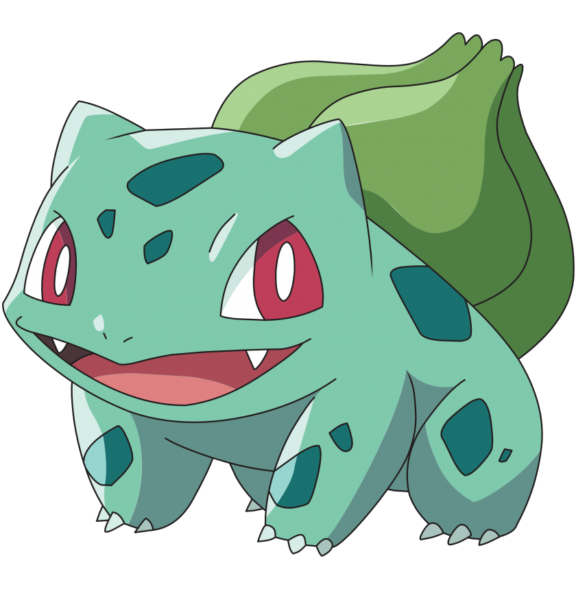

Bulbasaur es un Pokémon de tipo planta/veneno introducido en la primera generación.
Bulbasaur es un Pokémon cuadrúpedo de color verde y manchas más oscuras de formas geométricas.
Su cabeza representa cerca de un tercio de su cuerpo.
En su frente se ubican tres manchas que pueden cambiar dependiendo del ejemplar.
Tiene orejas pequeñas y puntiagudas. Sus ojos son grandes y de color rojo.
Las patas son cortas con tres garras cada una.
Este Pokémon tiene plantado un bulbo en el lomo desde que nace.

Ivysayr es un Pokémon de tipo planta/veneno introducido en la primera generación.
Es la evolución de Bulbasaur, uno de los Pokémon iniciales de Kanto.
Ivysaur posee un color azulado más vivo que su preevolución Bulbasaur.
Además, sus ojos adquieren un leve tono violeta y sus pupilas se vuelven negras.
El bulbo que había en la espalda de Bulbasaur se convirte en una flor, la cual aún permanece cerrada.
Esta flor es usada por Ivysaur de la misma forma que Bulbasaur empleaba su bulbo para la mayoría de sus ataques.

Venusaur es un Pokémon de tipo planta/veneno introducido en la primera generación.
Es la evolución de Ivysaur y, a partir de la sexta generación, puede megaevolucionar en Mega-Venusaur.
El capullo de su lomo se abre completamente, dejando ver una enorme flor rosada y unas hojas semejantes a las de palmera o las de la Rafflesia arnoldii, que se nutre de la luz solar por fotosíntesis, aunque también absorbe energía del propio Pokémon.
A través de ella, Venusaur realiza uno de sus ataques más potentes: rayo solar.
Esta planta segrega una savia muy dulce que atrae a muchos Pokémon bicho.
Venusaur tiene la habilidad de liberar un aroma dulce que puede tranquilizar a los demás Pokémon.